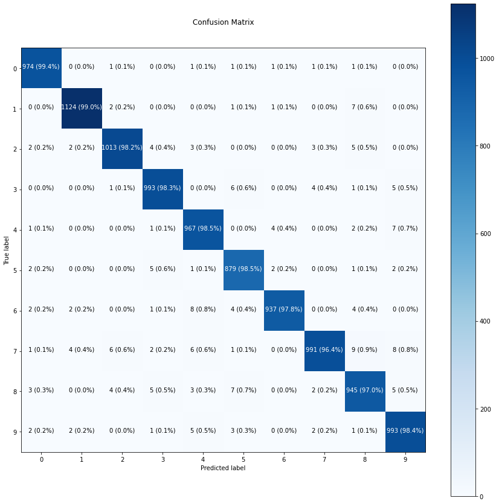
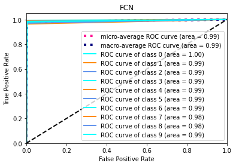

import keras
# from data_handlers import *
import pandas as pd
import numpy as npfrom keras.datasets import mnist
(x_train,y_train),(x_test,y_test)=mnist.load_data()Downloading data from https://storage.googleapis.com/tensorflow/tf-keras-datasets/mnist.npz
11493376/11490434 [==============================] - 0s 0us/step
11501568/11490434 [==============================] - 0s 0us/stepx_train = x_train.reshape(60000,784)
x_test = x_test.reshape(10000,784)
x_train = x_train/255.0
x_test = x_test/255.0
y_train = np.reshape(y_train, (len(y_train), 1))from keras.layers import Dense
from keras.models import Sequentialimport tensorflow as tffrom sklearn.model_selection import train_test_split
X_train, X_val, y_train, y_val = train_test_split(x_train, y_train, test_size=0.2, random_state=42)
X_train.shape,y_train.shape, X_val.shape,y_val.shape((48000, 784), (48000, 1), (12000, 784), (12000, 1))tf.random.set_seed(42)
model = tf.keras.Sequential([
tf.keras.layers.Dense(1000, activation="relu"),
tf.keras.layers.Dropout(0.2),
tf.keras.layers.Dense(784, activation="relu"),
tf.keras.layers.Dropout(0.2),
tf.keras.layers.Dense(400, activation="relu"),
tf.keras.layers.Dropout(0.2),
tf.keras.layers.Dense(200, activation="relu"),
tf.keras.layers.Dropout(0.2),
tf.keras.layers.Dense(10, activation="softmax")
])
model.compile(loss=tf.keras.losses.SparseCategoricalCrossentropy(),
optimizer=tf.keras.optimizers.Adam(lr=0.001), # ideal learning rate (same as default)
metrics=["accuracy"])
/usr/local/lib/python3.7/dist-packages/keras/optimizer_v2/adam.py:105: UserWarning: The `lr` argument is deprecated, use `learning_rate` instead.
super(Adam, self).__init__(name, **kwargs)history = model.fit(
X_train,
y_train,
epochs=30,
validation_data=(X_val, y_val)
)Epoch 1/30
1500/1500 [==============================] - 37s 24ms/step - loss: 0.2767 - accuracy: 0.9181 - val_loss: 0.1590 - val_accuracy: 0.9528
Epoch 2/30
1500/1500 [==============================] - 36s 24ms/step - loss: 0.1453 - accuracy: 0.9603 - val_loss: 0.1049 - val_accuracy: 0.9718
Epoch 3/30
1500/1500 [==============================] - 36s 24ms/step - loss: 0.1137 - accuracy: 0.9686 - val_loss: 0.1158 - val_accuracy: 0.9688
Epoch 4/30
1500/1500 [==============================] - 39s 26ms/step - loss: 0.0944 - accuracy: 0.9739 - val_loss: 0.1138 - val_accuracy: 0.9724
Epoch 5/30
1500/1500 [==============================] - 36s 24ms/step - loss: 0.0870 - accuracy: 0.9761 - val_loss: 0.1001 - val_accuracy: 0.9750
Epoch 6/30
1500/1500 [==============================] - 36s 24ms/step - loss: 0.0749 - accuracy: 0.9794 - val_loss: 0.1040 - val_accuracy: 0.9754
Epoch 7/30
1500/1500 [==============================] - 36s 24ms/step - loss: 0.0701 - accuracy: 0.9808 - val_loss: 0.1053 - val_accuracy: 0.9775
Epoch 8/30
1500/1500 [==============================] - 36s 24ms/step - loss: 0.0711 - accuracy: 0.9820 - val_loss: 0.0934 - val_accuracy: 0.9793
Epoch 9/30
1500/1500 [==============================] - 36s 24ms/step - loss: 0.0620 - accuracy: 0.9836 - val_loss: 0.0944 - val_accuracy: 0.9774
Epoch 10/30
1500/1500 [==============================] - 36s 24ms/step - loss: 0.0545 - accuracy: 0.9859 - val_loss: 0.0992 - val_accuracy: 0.9783
Epoch 11/30
1500/1500 [==============================] - 36s 24ms/step - loss: 0.0551 - accuracy: 0.9857 - val_loss: 0.1464 - val_accuracy: 0.9728
Epoch 12/30
1500/1500 [==============================] - 36s 24ms/step - loss: 0.0581 - accuracy: 0.9861 - val_loss: 0.1384 - val_accuracy: 0.9731
Epoch 13/30
1500/1500 [==============================] - 36s 24ms/step - loss: 0.0475 - accuracy: 0.9876 - val_loss: 0.1219 - val_accuracy: 0.9775
Epoch 14/30
1500/1500 [==============================] - 36s 24ms/step - loss: 0.0544 - accuracy: 0.9872 - val_loss: 0.1042 - val_accuracy: 0.9812
Epoch 15/30
1500/1500 [==============================] - 36s 24ms/step - loss: 0.0428 - accuracy: 0.9895 - val_loss: 0.1182 - val_accuracy: 0.9807
Epoch 16/30
1500/1500 [==============================] - 36s 24ms/step - loss: 0.0459 - accuracy: 0.9894 - val_loss: 0.1164 - val_accuracy: 0.9797
Epoch 17/30
1500/1500 [==============================] - 37s 25ms/step - loss: 0.0420 - accuracy: 0.9903 - val_loss: 0.1044 - val_accuracy: 0.9834
Epoch 18/30
1500/1500 [==============================] - 36s 24ms/step - loss: 0.0441 - accuracy: 0.9892 - val_loss: 0.1372 - val_accuracy: 0.9789
Epoch 19/30
1500/1500 [==============================] - 35s 24ms/step - loss: 0.0395 - accuracy: 0.9912 - val_loss: 0.1800 - val_accuracy: 0.9767
Epoch 20/30
1500/1500 [==============================] - 35s 24ms/step - loss: 0.0459 - accuracy: 0.9898 - val_loss: 0.1399 - val_accuracy: 0.9787
Epoch 21/30
1500/1500 [==============================] - 35s 24ms/step - loss: 0.0462 - accuracy: 0.9892 - val_loss: 0.1615 - val_accuracy: 0.9780
Epoch 22/30
1500/1500 [==============================] - 36s 24ms/step - loss: 0.0342 - accuracy: 0.9911 - val_loss: 0.1540 - val_accuracy: 0.9819
Epoch 23/30
1500/1500 [==============================] - 36s 24ms/step - loss: 0.0406 - accuracy: 0.9913 - val_loss: 0.1259 - val_accuracy: 0.9839
Epoch 24/30
1500/1500 [==============================] - 36s 24ms/step - loss: 0.0387 - accuracy: 0.9917 - val_loss: 0.1566 - val_accuracy: 0.9787
Epoch 25/30
1500/1500 [==============================] - 39s 26ms/step - loss: 0.0441 - accuracy: 0.9912 - val_loss: 0.1574 - val_accuracy: 0.9807
Epoch 26/30
1500/1500 [==============================] - 37s 24ms/step - loss: 0.0391 - accuracy: 0.9913 - val_loss: 0.1485 - val_accuracy: 0.9829
Epoch 27/30
1500/1500 [==============================] - 37s 24ms/step - loss: 0.0414 - accuracy: 0.9914 - val_loss: 0.1894 - val_accuracy: 0.9783
Epoch 28/30
1500/1500 [==============================] - 36s 24ms/step - loss: 0.0389 - accuracy: 0.9922 - val_loss: 0.1380 - val_accuracy: 0.9812
Epoch 29/30
1500/1500 [==============================] - 36s 24ms/step - loss: 0.0412 - accuracy: 0.9916 - val_loss: 0.1605 - val_accuracy: 0.9812
Epoch 30/30
1500/1500 [==============================] - 36s 24ms/step - loss: 0.0398 - accuracy: 0.9918 - val_loss: 0.1563 - val_accuracy: 0.9832predictions = model.predict(x_test)
y_preds = predictions.argmax(axis =1)from sklearn.metrics import classification_report
print(classification_report(y_test, y_preds)) precision recall f1-score support
0 0.99 0.99 0.99 980
1 0.99 0.99 0.99 1135
2 0.99 0.98 0.98 1032
3 0.98 0.98 0.98 1010
4 0.97 0.98 0.98 982
5 0.97 0.99 0.98 892
6 0.99 0.98 0.98 958
7 0.99 0.96 0.98 1028
8 0.97 0.97 0.97 974
9 0.97 0.98 0.98 1009
accuracy 0.98 10000
macro avg 0.98 0.98 0.98 10000
weighted avg 0.98 0.98 0.98 10000
def accuracy(y_hat, y):
assert(y_hat.size == y.size)
count=0
for i in range(y.size):
if (y[i]==y_hat[i]):
count = count + 1
acc = count/y.size
return acc
pass
print(accuracy(y_preds,y_test))0.9816import itertools
from sklearn.metrics import confusion_matrix
# Our function needs a different name to sklearn's plot_confusion_matrix
def make_confusion_matrix(y_true, y_pred, classes=None, figsize=(10, 10), text_size=15):
"""Makes a labelled confusion matrix comparing predictions and ground truth labels.
If classes is passed, confusion matrix will be labelled, if not, integer class values
will be used.
Args:
y_true: Array of truth labels (must be same shape as y_pred).
y_pred: Array of predicted labels (must be same shape as y_true).
classes: Array of class labels (e.g. string form). If `None`, integer labels are used.
figsize: Size of output figure (default=(10, 10)).
text_size: Size of output figure text (default=15).
Returns:
A labelled confusion matrix plot comparing y_true and y_pred.
Example usage:
make_confusion_matrix(y_true=test_labels, # ground truth test labels
y_pred=y_preds, # predicted labels
classes=class_names, # array of class label names
figsize=(15, 15),
text_size=10)
"""
# Create the confustion matrix
cm = confusion_matrix(y_true, y_pred)
cm_norm = cm.astype("float") / cm.sum(axis=1)[:, np.newaxis] # normalize it
n_classes = cm.shape[0] # find the number of classes we're dealing with
# Plot the figure and make it pretty
fig, ax = plt.subplots(figsize=figsize)
cax = ax.matshow(cm, cmap=plt.cm.Blues) # colors will represent how 'correct' a class is, darker == better
fig.colorbar(cax)
# Are there a list of classes?
if classes:
labels = classes
else:
labels = np.arange(cm.shape[0])
# Label the axes
ax.set(title="Confusion Matrix",
xlabel="Predicted label",
ylabel="True label",
xticks=np.arange(n_classes), # create enough axis slots for each class
yticks=np.arange(n_classes),
xticklabels=labels, # axes will labeled with class names (if they exist) or ints
yticklabels=labels)
# Make x-axis labels appear on bottom
ax.xaxis.set_label_position("bottom")
ax.xaxis.tick_bottom()
# Set the threshold for different colors
threshold = (cm.max() + cm.min()) / 2.
# Plot the text on each cell
for i, j in itertools.product(range(cm.shape[0]), range(cm.shape[1])):
plt.text(j, i, f"{cm[i, j]} ({cm_norm[i, j]*100:.1f}%)",
horizontalalignment="center",
color="white" if cm[i, j] > threshold else "black",
size=text_size)import matplotlib.pyplot as pltclass_names = ['0', '1', '2', '3', '4',
'5', '6', '7', '8', '9']make_confusion_matrix(y_true=y_test,
y_pred=y_preds,
classes=class_names,
figsize=(15, 15),
text_size=10)
model.summary()Model: "sequential"
_________________________________________________________________
Layer (type) Output Shape Param #
=================================================================
dense (Dense) (None, 1000) 785000
dropout (Dropout) (None, 1000) 0
dense_1 (Dense) (None, 784) 784784
dropout_1 (Dropout) (None, 784) 0
dense_2 (Dense) (None, 400) 314000
dropout_2 (Dropout) (None, 400) 0
dense_3 (Dense) (None, 200) 80200
dropout_3 (Dropout) (None, 200) 0
dense_4 (Dense) (None, 10) 2010
=================================================================
Total params: 1,965,994
Trainable params: 1,965,994
Non-trainable params: 0
_________________________________________________________________import numpy as np
import matplotlib.pyplot as plt
from itertools import cycle
from sklearn import svm, datasets
from sklearn.metrics import roc_curve, auc
from sklearn.model_selection import train_test_split
from sklearn.preprocessing import label_binarize
from sklearn.multiclass import OneVsRestClassifier
from sklearn.metrics import roc_auc_score
y_test1 = label_binarize(y_test, classes=[0,1,2,3,4,5,6,7,8,9])
y_preds1 = label_binarize(y_preds, classes=[0,1,2,3,4,5,6,7,8,9])fpr = dict()
tpr = dict()
roc_auc = dict()
for i in range(10):
fpr[i], tpr[i], _ = roc_curve(y_test1[:, i], y_preds1[:, i])
roc_auc[i] = auc(fpr[i], tpr[i])
# Compute micro-average ROC curve and ROC area
fpr["micro"], tpr["micro"], _ = roc_curve(y_test1.ravel(), y_preds1.ravel())
roc_auc["micro"] = auc(fpr["micro"], tpr["micro"])all_fpr = np.unique(np.concatenate([fpr[i] for i in range(10)]))
lw=2
# Then interpolate all ROC curves at this points
mean_tpr = np.zeros_like(all_fpr)
for i in range(10):
mean_tpr += np.interp(all_fpr, fpr[i], tpr[i])
# Finally average it and compute AUC
mean_tpr /= 10
fpr["macro"] = all_fpr
tpr["macro"] = mean_tpr
roc_auc["macro"] = auc(fpr["macro"], tpr["macro"])
# Plot all ROC curves
plt.figure()
plt.plot(
fpr["micro"],
tpr["micro"],
label="micro-average ROC curve (area = {0:0.2f})".format(roc_auc["micro"]),
color="deeppink",
linestyle=":",
linewidth=4,
)
plt.plot(
fpr["macro"],
tpr["macro"],
label="macro-average ROC curve (area = {0:0.2f})".format(roc_auc["macro"]),
color="navy",
linestyle=":",
linewidth=4,
)
colors = cycle(["aqua", "darkorange", "cornflowerblue"])
for i, color in zip(range(10), colors):
plt.plot(
fpr[i],
tpr[i],
color=color,
lw=lw,
label="ROC curve of class {0} (area = {1:0.2f})".format(i, roc_auc[i]),
)
plt.plot([0, 1], [0, 1], "k--", lw=lw)
plt.xlim([0.0, 1.0])
plt.ylim([0.0, 1.05])
plt.xlabel("False Positive Rate")
plt.ylabel("True Positive Rate")
plt.title("FCN")
plt.legend(loc="lower right")
plt.show()